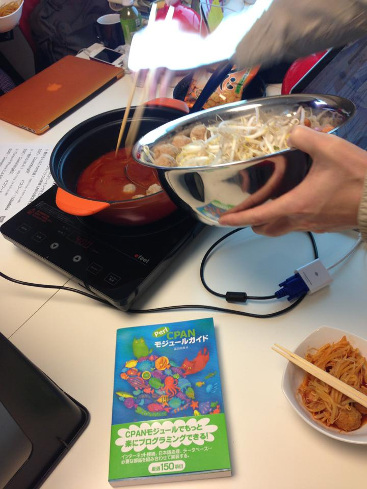

Kansai.pmの
最近の活動について
- 2013年02月23日
- Kansai.pm 第15回ミーティング
- @nqounet
何者？
- 名前 ： 若林 信敬
- Twitter ： @nqounet
- Facebook ： nobutaka.wakabayashi
- 仕事 ： フリーのPerlプログラマ
Kansai.pm代表
お仕事ください
- Perl以外でもOKですよ！
今回の内容
- Kansai.pmについて
- Kansai.pmの最近の活動
- ユーザーグループ
- 勉強会
Kansai.pmについて
- 公式サイト ： http://kansai.pm.org
- Twitter ： @kansaipm
- Facebook ： kansaipm
公式サイト
素敵なCMS募集中
- Markdown解釈可能
- SQLiteまたはファイルで記事管理
- githubで管理できれば文句なし
- できればPerl製
Kansai.pmの
最近の活動
- OSC2012 Kansai@Kyoto
- KOF2012
OSC2012 Kansai@Kyoto
- オープンソースカンファレンス
- 2012年8月3日（金）、4日（土）
- 京都リサーチパーク


KOF2012
- 関西オープンフォーラム
- 2012年11月9日（金）、10日（土）
- 大阪南港ATC（ITM棟10F）

ユーザーグループ
- Kyoto.pm（公式）
- Namba.pm（非公式）
- 他にも続々！（未調査）
勉強会
- Perl入学式
- Perl鍋
Perl入学式

Perl入学式
- 次回 ： このあと発表（？）
Perl鍋

Perl鍋
- 次回 ： 3月14日（木）19:00 〜
- http://connpass.com/event/1852/